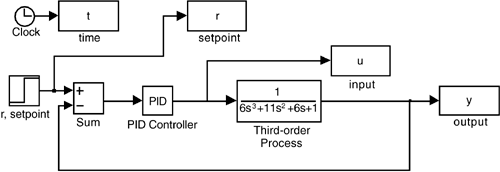
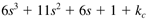

| [ Team LiB ] |
|
5.9 SIMULINK Block DiagramsSIMULINK is a natural environment for simulating closed-loop systems. It is recommended that you read Module 2, Introduction to SIMULINK, and reproduce the simulation results shown in Example 5.3. Generate the block diagram shown in Figure 5-18 and run the simulations for various controller proportional gains. Figure 5-18. SIMULINK diagram for Example 5.3. Recall that the closed-loop characteristic equation for Example 5.3 is  For kc + 10, the MATLAB roots command can be used to find that the process is on the verge of instability, with the following values for the poles: » roots([6 11 6 11]) ans = -1.8333 -0.0000 + 1.0000i -0.0000 - 1.0000i Notice that this analysis can be performed for several values of kc, to construct Table 5-1. |
| [ Team LiB ] |
|